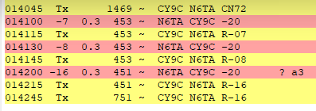
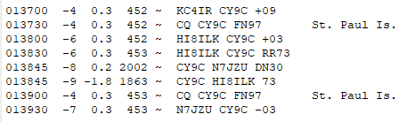

What I just recorded on 20 M. 14094 kHz. F/H. I was calling for a 5 W QSO but no go so far. I see no click issue. I do note the HI8 may have been way off but still got a contact.Al
On Fri, Aug 30, 2024 at 6:22 PM Rick NK7I via Chat <chat@ncdxc.org> wrote:DT > 1 sec has little to do with the app but it has everything to do with the computer clock/s (and if running all bands on one computer, some latency will happen). Their clocks are off, so you can use TImeFudge to compensate on your end. One second is a reasonable point to consider compensating.
For under $200, a GPS Pi NTP server can be made and it can service the entire network with very little effort. There is no reason to not have one on a DXpedition for any mode that requires precise timing and/or logging.
Using a GPS HAT on a Pi 3b+ allows for wifi or wired (into the router) network, then just point every device, to that server. The network load, is trivial and the suggested NTP client is Meinburg (NOT the MS default; it’s awful). It needs a small 5v power source and a case (3D print one) and a reasonable view of the sky for GPS lock.
[It cannot be used as a GPSDO for precise frequency control, that requires another piece of hardware.]
73,
Rick nk7i
> On Aug 30, 2024, at 3:03 PM, Bruce Bern via Chat <chat@ncdxc.org> wrote:
>
> 21091, 14094, and 10131 all loud and workable from my QTH. They’re using either MSHV or F/H, probably because of dTs>1 second. Go get ‘em!
> 73, Bruce K3NQ
> Sent from my iPhone
>
> _______________________________________________
> Chat mailing list
> Chat@ncdxc.org
> http://mail.ncdxc.org/mailman/listinfo/chat_ncdxc.org
_______________________________________________
Chat mailing list
Chat@ncdxc.org
http://mail.ncdxc.org/mailman/listinfo/chat_ncdxc.org